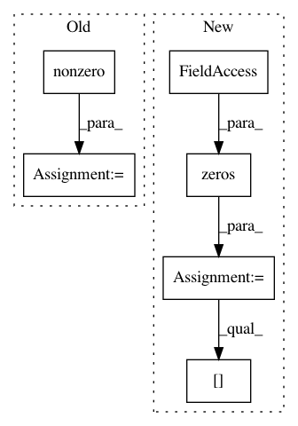

d6a2e55cea7640cf6ab1250bbaba66dd79a7ee85,pymc3/theanof.py,BatchedDiag,perform,#BatchedDiag#Any#Any#Any#Any#,475
Before Change
np.arange(0, C.size, C.shape[1]).reshape((-1, 1)),
C.shape[1], 1
)
index[index.nonzero()] += inc.flatten()
z[0] = C1[index]
def grad(self, inputs, gout):
(gz,) = gout
After Change
bc = C.shape[0]
dim = C.shape[-1]
Cd = np.zeros((bc, dim, dim), C.dtype)
bidx = np.repeat(np.arange(bc), dim)
didx = np.tile(np.arange(dim), bc)
Cd[bidx, didx, didx] = C.flatten()
z[0] = Cd
def grad(self, inputs, gout):
In pattern: SUPERPATTERN
Frequency: 3
Non-data size: 6
Instances
Project Name: pymc-devs/pymc3
Commit Name: d6a2e55cea7640cf6ab1250bbaba66dd79a7ee85
Time: 2017-09-02
Author: maxim.v.kochurov@gmail.com
File Name: pymc3/theanof.py
Class Name: BatchedDiag
Method Name: perform
Project Name: OpenNMT/OpenNMT-py
Commit Name: 3a71ecffa3a8aff931a0ff865434e11e8ea08ba3
Time: 2018-10-22
Author: guillaume.klein@systrangroup.com
File Name: onmt/translate/translator.py
Class Name: Translator
Method Name: _fast_translate_batch
Project Name: scikit-image/scikit-image
Commit Name: 9795e24cb5b3b7ffed0ca959a0986b28366908a9
Time: 2017-09-12
Author: peter@goldsborough.me
File Name: skimage/data/generate_shapes.py
Class Name:
Method Name: generate_shapes